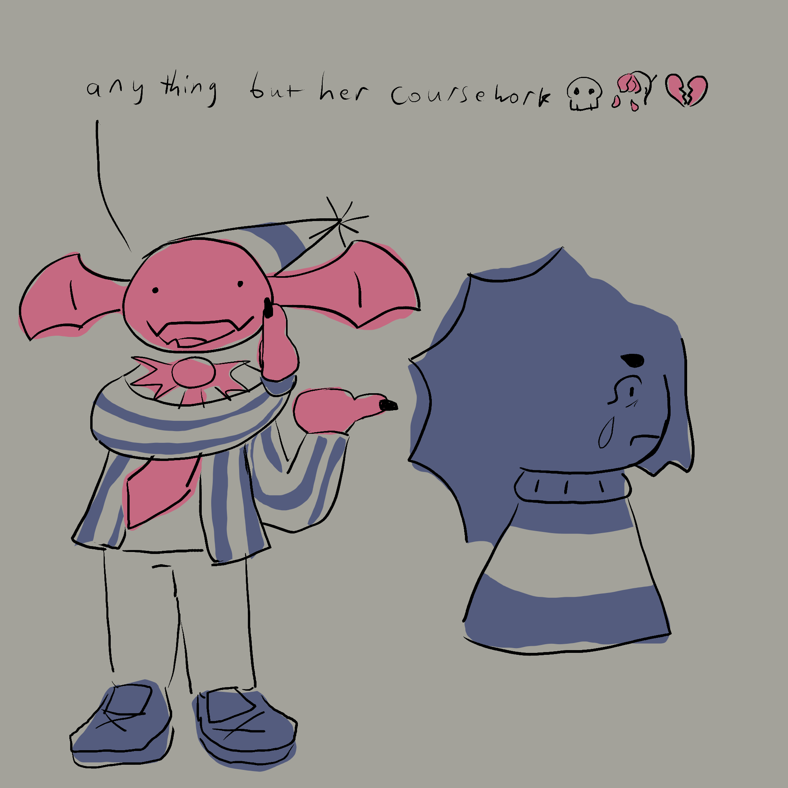
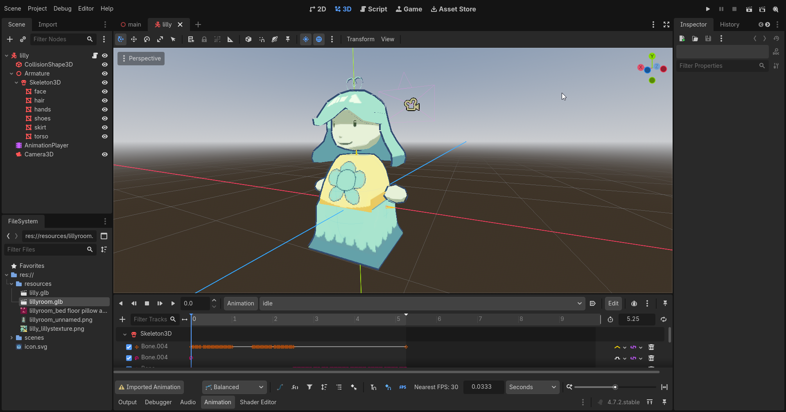
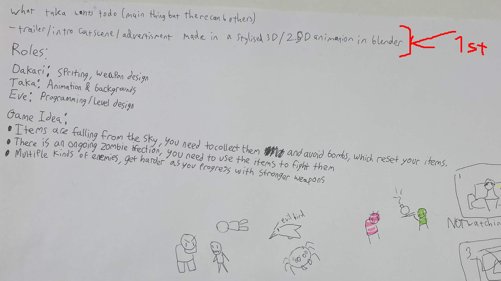

Explaining My Role
In my previous college projects I was able to get a good sense of what kind of role I was fit for
On all four games I worked on I designed the character turnaround sheet for the protagonist
On the first game during project 1 I ended up leaving for a few reasons, one of which was due to not wanting to do the pixel art sizes I was assigned
On the second game I made during project 1, I was a solo-dev who made basically everything on my own and did a lot of stylised cartoony work

^Drawing I made during the development of the second game for fun^
On the third project I worked on for project 2, I was in a duo with Eve where she was the gamedev and I was the modeller, this was significant in my creative development as this is the first time I made an OC character model that was also fully textured, rigged and animated

^The player model I made exported into Godot^
On the fourth project I worked on for my FMP, I was a solo writer and artist and I ended up rather frustrated with the project partly because it was a 2D project at its core and I was spending a lot of time at this point modelling instead as it was a new skill I wanted to prioritise
^Example of a model I was doing when I really should've been doing my FMP instead^
During this period, I started falling in love with stylised 3D and 2.5D art styles I found of creators online I saw and really wanted to make similar work myself
From t
For this year's project 1 I'm in a team with Eve and Dakari (I've seen his artwork and I know he has an interest in manga) and prior to even making an idea I wrote down on our brainstorming document that I wanted to do 2.5D/stylised 3D animation of some sort for the project
